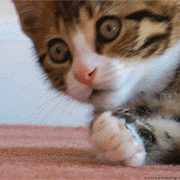
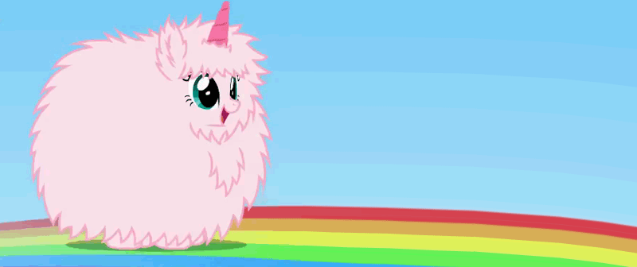
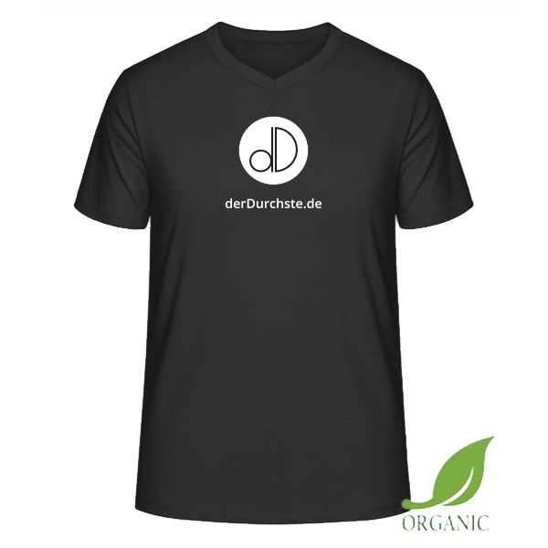
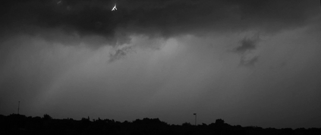
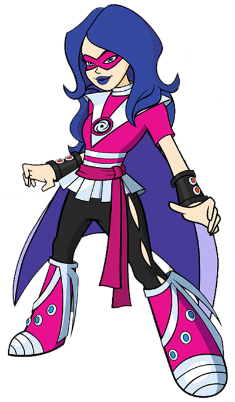
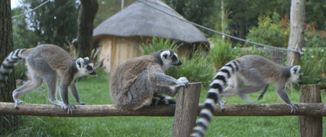
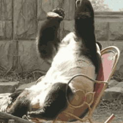

Die Umfrage
der Throughste ist?

Alle auf dieser Webseite geschilderten Handlungen und
Personen sind frei erfunden. Etwaige Ähnlichkeiten
mit tatsächlichen Begebenheiten, lebenden oder verstorbenen Personen wären rein zufällig und sind nicht
beabsichtigt.
Close
Die Liste
der Throughhhste!

- SR - der PADAWAN
- FF - der IMPERATOR
- RB - der FEINSCHMECKER
- TS - der NÖRGLER
- CR - der ZEITREISENDE
- TK - der FACHBERATER
- JM - der FLIEGA
- CB - der HUNGRIGE
- CH - der HUNDEFLÜSTERER
- AS - der SPANIER
- AK - der MASSÖR
- TÖ - der SCHWEIZER
- SK - der BRAUMEISTER
- CW - die TRENDSETTERIN
- AG - der FLUCHENDE
- SE - der GULPINATOR
- CA - der ANACONDA
- DM - der SURVIVOR
- ACR - die MEISTERKÖCHIN
- NB - die BUFFETFRÄSE
- CO - der FASTENDE
- SA - die BESTE
Alle auf dieser Webseite geschilderten Handlungen und Personen sind
frei erfunden. Etwaige Ähnlichkeiten
mit tatsächlichen Begebenheiten, lebenden oder verstorbenen Personen wären rein zufällig und sind nicht
beabsichtigt.
Close
Das TSCHÖÖÖsen
- C U later Alligator
- In a while, crocodile
- Tschüsseldorf
- Tschüssing
- Bis Baldrian
- Mach's Gucci
- Tschö mit Ö
- Hau rein, Hein
- Ciao for now
- Tschüssikowski
- Bis später, Peter
- San FranTschüssko
- Tschüsli Müsli
- Ade mit E
- Ciao Kakao
- Bis Dannimannski
- Bis Danzig
- Bis Denver
- Ich verabscheue mich
- Ende Gelände
- Bis denne, Antenne
- Hastalavista
- BundesgartenTschau
- Adiue mit ö
- TagesTschau
- Mach's gut, Knut
- Bis denne, Frau Henne
- Bis baldo, Ronaldo
- Paris, Athen, Auf Wiedersehn
- Good Bye, Hawaii
- So long, Hongkong
- Tschausen
- Auf Wiederhörnchen
- Auf Video sehen
- Sauf wieder een
- Heroin spaziert
- In diesem Sinne: Ab in die Rinne
- Adios amigos
- Ciao mit au
- Bye bye, Juchhei
- Bis denn, Sven
- Bis später, Attentäter
- Erst die Rechte, dann die Linke. Beide machen winke, winke.
- Halb acht, Schicht im Schacht
- Tschüssi mit Küssi
- Tschau, du Sau
- Geh mit Gott, aber flott
- Bye bye, Butterfly
- Chapeau mit O
- Ciaosen Banausen
- Küsschen aufs Nüsschen
- Bye bye, Kartoffelbrei
- Schönes Knochenende
- Tschüssilinski
- Tschau bella, Frikadella
- See you soon, Sailor Moon
Close
Das Impressum
NUR WER SELBST DURCH IST,
ERKENNT WER THROUGH IST.
derDurchste.de
dedicated to Gudula
info@derdurchste.de
Alle auf dieser Webseite geschilderten Handlungen und Personen sind
frei erfunden. Etwaige Ähnlichkeiten
mit tatsächlichen Begebenheiten, lebenden oder verstorbenen Personen wären rein zufällig und sind nicht
beabsichtigt.
Close
Das Merch
Weitere Produkte auf Anfrage möglich.
Einfach per Vorkasse per E-Mail
bestellen.
Beim Shirt bitte Größe angeben. Girly-Shirt möglich.

Shirt - 29,- €
Tasse - 14,- €
Bestellen oder Anfrage stellen
Lieferzeit 2-6 Wochen. Keine Rücknahme.
Alle Angaben ohne Gewähr. Bilder können vom Endprodukt abweichen.
Close
Der Blitz
Wirkung auf Menschen
 
Während eines Gewitters ist man im Freien – vor allem auf erhöhten Standpunkten – der Gefahr des
Blitzschlags ausgesetzt. Die Effekte eines Blitzschlages entsprechen denen eines Stromunfalls mit den
für Hochspannungsunfälle typischen Verletzungen wie Verbrennungen, aber auch Auswirkungen auf Gehirn,
Rückenmark, Muskulatur einschließlich des Herzens und anderer Organe.
Im Gegensatz zu indirekten sind direkte Blitzeinschläge in Menschen oft tödlich, vor allem bei stärkeren
Blitzen.
Bei etwa 50 % der Blitzopfer, die überleben, treten nach Monaten bis Jahren neurologische Folgeschäden
auf.
Zusätzlich zu den direkten Auswirkungen des elektrischen Stroms auf Lebewesen, stellt auch die durch den
Blitz resultierende Druckwelle eine Gefahr dar. Diese kann je nach Stärke des Blitzes einer
Sprengwirkung von ungefähr 30 kg TNT entsprechen und somit sogar in einiger Entfernung (auch in einem
Radius von 100 Meter) Folgeverletzungen wie Gehörschäden, zum Beispiel Hörsturz, Tinnitus oder Risse im
Trommelfell, aber auch unter Umständen lebensbedrohliche Risse der Lunge oder Verletzungen innerer
Organe sowie Frakturen verursachen.
Je nach Situation können weitere indirekte Wirkungen bestehen, beispielsweise durch das Erschrecken oder
die Blendwirkung, welche zu Folgeunfällen führen können. Personen, die sich in der Nähe eines
Blitzschlags befunden haben, haben in der Folgezeit zum Teil physiologische oder psychische Störungen
oder Veränderungen, die sich sogar dauerhaft in einer Persönlichkeitsveränderung auswirken können.
Tödlicher Blitzschlag ist in Deutschland selten geworden; die durchschnittlich drei bis sieben
Todesopfer pro Jahr ließen sich durch weitere Vorsichtsmaßnahmen noch weiter reduzieren. Im
19. Jahrhundert wurden in Deutschland noch an die 300 Personen jährlich vom Blitz getötet, da wesentlich
mehr Menschen auf freiem Feld arbeiteten und sich nicht in geschützte Objekte wie Autos, Traktoren oder
Mähdrescher zurückziehen konnten.
Close
das Zählen
Eins, Zwei - Eins...
 
Zählen ist eine Handlung zur Ermittlung der Anzahl der Elemente in einer endlichen Menge von
gleichwertigen Objekten. Das Zählen erfolgt in Zählschritten, oft in Einerschritten, wobei die
entsprechende Zahlenfolge, als Folge von Zahlwörtern, zum Beispiel „eins, zwei, drei“ oder „zwei, vier,
sechs, sieben“ durchlaufen wird. Bei einer aufsteigenden Folge wird vorwärts gezählt, bei einer
absteigenden Folge rückwärts. Auch das Bestimmen der Anzahl von unterscheidbaren Objekten durch
Addition, die einer aufsteigenden Zahlenfolge zugrunde liegt, wird Zählen genannt. Das zugehörige
Substantiv Zählung bezeichnet den Zählvorgang oder dessen Ergebnis. Das Abzählen der Anzahl von
definierten Einheiten (Normalen), Objekten oder Ereignissen ist eine Form der Messung.
Durch archäologische Zeugnisse ist belegt, dass Menschen seit mindestens 50.000 Jahren über
Zählverfahren verfügen. Zählen wurde bereits in alten Kulturen verwendet, um die Anzahl und
Vollständigkeit von sozialen und ökonomischen Zählobjekten wie Gruppenmitgliedern, Beutetieren, Besitz
oder Schulden zu erfassen. Das Zählen führte mit zur Entwicklung von Zahlennotation, Zahlensystemen und
der Schrift.
Close